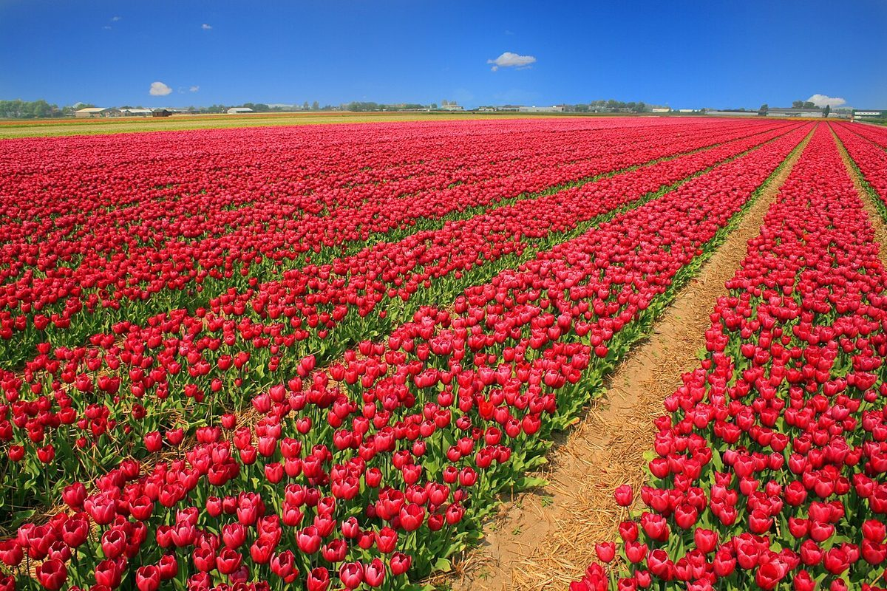
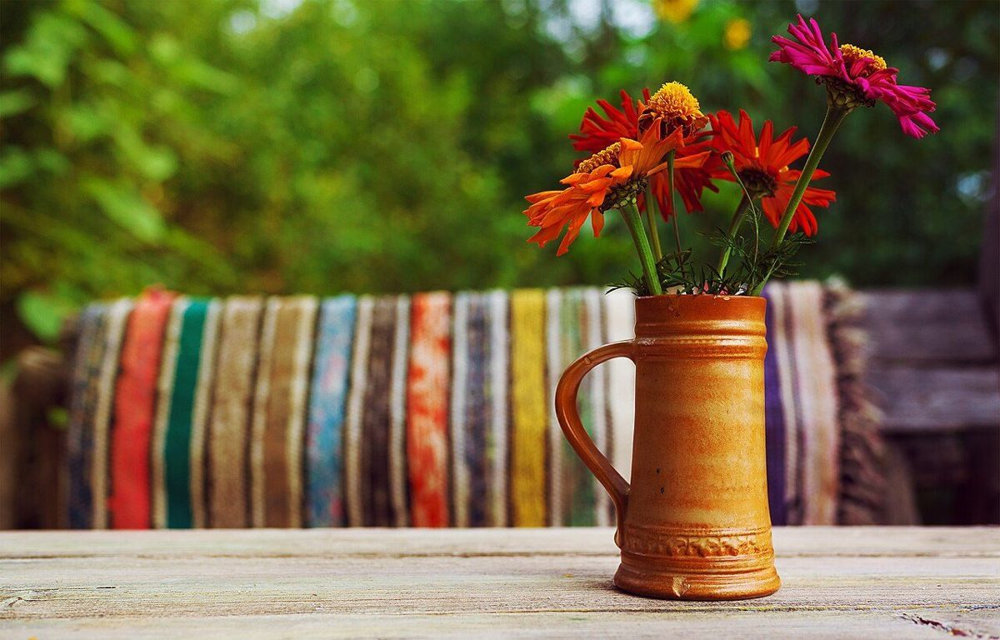
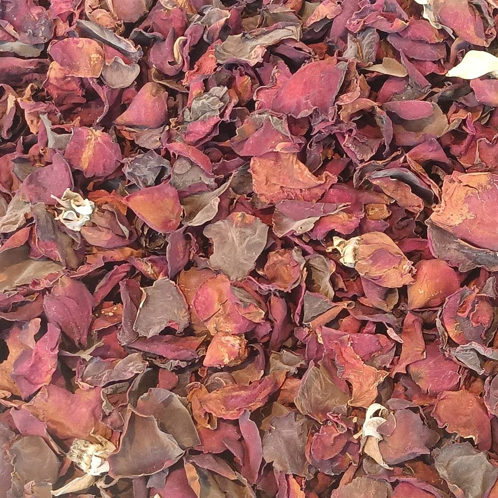
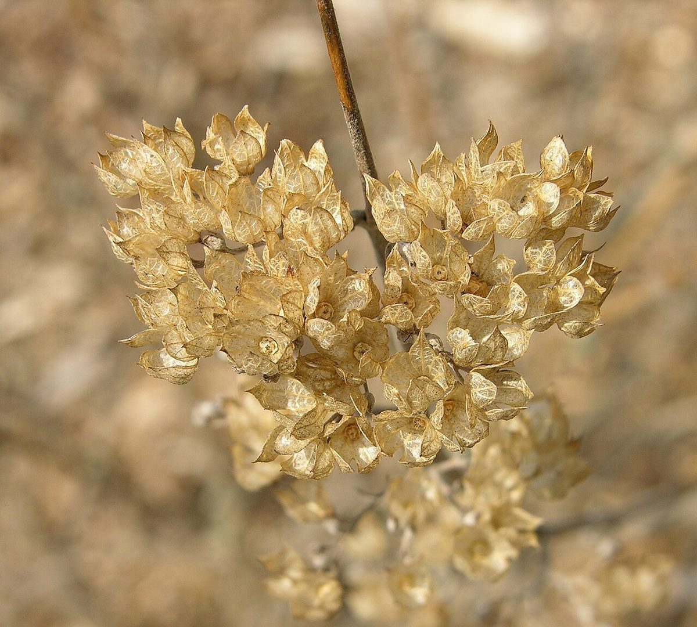

カフェ / 青森県青森市
FLEURフルール カフェ
青森県青森市古川にあるカフェ「FLEUR cafe」のご案内ページです。営業時間やメニューなど、詳しいことは準備中。お電話かInstagramで、お店の最新の情報をご確認ください。

制作側の連想
「FLEUR」の綴りから、花屋のバケツを思い浮かべました
店名の由来は分かりません。制作側は「FLEUR」という綴りの響きから、花屋の店先に並ぶバケツと、そこに結ばれた荷札を連想しました。そこでこのページは、バケツと荷札のつくりにしています。お店が花を扱っているかどうかは分かりません。お店の理念や由来とは無関係の、制作側の連想です。
バケツは三つ
荷札つきの、三つのバケツ(イメージ)
写真はお店のものではありません。国外・撮影地不明のフリー素材を、バケツの区分けのイメージで並べています。
一の札生けた花



二の札乾いた花




三の札カップと豆


ご案内
お店のこと(確認できたものだけ)
| 所在地 | 〒030-0862 青森県青森市古川１丁目１−３ |
|---|---|
| 電話 | 017-718-2733 |
| 営業時間 | 準備中 |
| 定休日 | 準備中 |
| ご予約 | 準備中 |
| 駐車場 | 準備中 |
| SNS | Instagram @fleur.cafe__ |